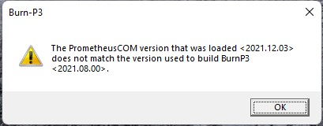

Logiciel
Version actuelle
Burn-P3 2021.08.00 Log4J sûr pour les systèmes d'exploitation Windows 64 bits a été publié en août 2021
Problèmes connus

Veuillez noter : vous rencontrerez cet avertissement jusqu'à ce que nous mettions à jour la vérification de version. Rien à craindre, Burn-P3 fonctionnera avec la version 12.03 de Prometheus, nous travaillons activement à la mise à jour du vérificateur de version. Pour l'instant, appuyez sur OK et continuez à utiliser le modèle comme vous le feriez normalement.
Instructions d'installation importantes
- Installez Prometheus 2021.12.03 et toutes les prérequis logicielles associées sur un ordinateur Windows 64 bits qui respecte ou dépasse la configuration minimale requise et effectue un redémarrage du système.
- Connectez-vous à votre ordinateur en tant qu'administrateur système.
- Désinstallez toute version précédente de l'application Burn-P3 de votre ordinateur.
- Fermez toutes les applications ouvertes et exécutez BurnP3_2021.08.00_English.msi [MSI - 5.34 MB]. Un assistant de configuration vous guidera tout au long de l'installation.
Exemple d'ensemble de données
Cliquez sur le lien suivant pour télécharger les fichiers de test utilisés dans le didacticiel Burn-P3. Ces fichiers de test servent également de bons exemples lors de la création de votre propre ensemble de données Burn-P3.
- fichiers_test_francaisV4_7 [ZIP - 38.2 MB]
Versions précédentes
- BurnP3_6.2.4.01_2019-07-19_Francais[MSI - 5.36 MB]
- BurnP3_6.2.4_2019-01-22_Francais [MSI - 7.45 MB]
- BurnP3_4.7.4_2018-03-23_Francais [MSI - 13.1 MB]
Changements dans Burn-P3 2021.08.00
Nouvelles fonctionnalités
- Bientôt disponible...
Correction de bugs
- Bientôt disponible...
Voici la configuration matérielle et logicielle requise au fonctionnement de Burn-P3.
| Requirement | Minimum | Recommandé |
|---|---|---|
| Système d'exploitations* | Version 64 bits de Windows 7 | Version 64 bits de Windows 10 |
| Logiciels Prometheus | Version 6.2.4 | Version 6.2.4 |
| Logiciels Microsoft | .NET Framework 4.6etVisual C++ 2017 Redistribuable (x64) | .NET Framework 4.7etVisual C++ 2017 Redistribuable (x64) |
| Logiciels Oracle | Version 8 de Java 64 bits pour Windows(Update 151) | Version 8 de Java 64 bits pour Windows(Update 191) |
| Logiciels Intel® | 2019 C++ Bibliothèque Redistribuable pour Windows (x64)(Version initiale: 19.0.117) | 2019 C++ Bibliothèque Redistribuable pour Windows (x64)(Update 1: 19.1.144) |
| Processeur | 4 coeurs | 4 coeurs multifils |
| Mémoire vive (RAM) | 6 Go | 12 Go |
| Espace disque disponible | 10 Go | 500 Go |
*les systèmes d’exploitation de 32 bit ne sont plus supportés.